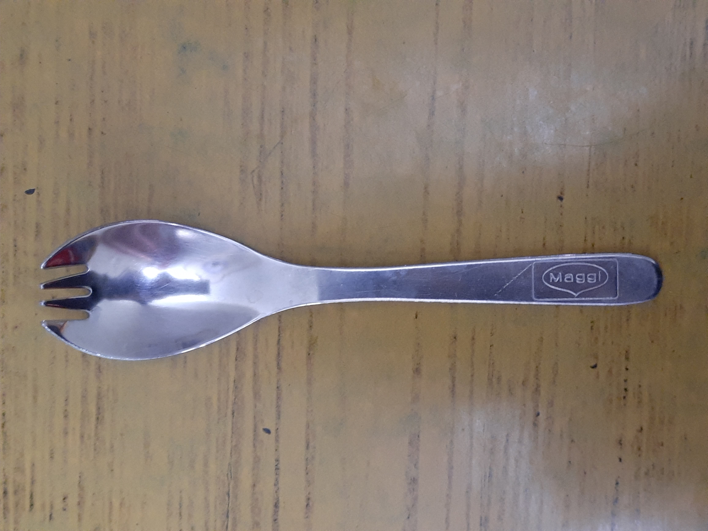

Case Study
1. image -
Output on Microsoft Azure - undifined
Output on mobile net - Teddy, Teddy bear
Results - mobile net is more accurate
2. image -
Output on Microsoft Azure - car
Output on mobile net - Padlock
Results - Microsoft Azure is more accurate
3. image -
Output on Microsoft Azure - diagram
Output on mobile net - Mouse, computer mouse
Results - mobile net is more accurate
4. image -
Output on Microsoft Azure - knife
Output on mobile net - Ballpoint,Ballpoint pen, ballpen
Results - Mobile net is more accurate
5. image -

Output on Microsoft Azure - knife
Output on mobile net - Can opener, tin opener
Results - no one is accurate
©copyrights.Gurman Singh All rights reserved ©